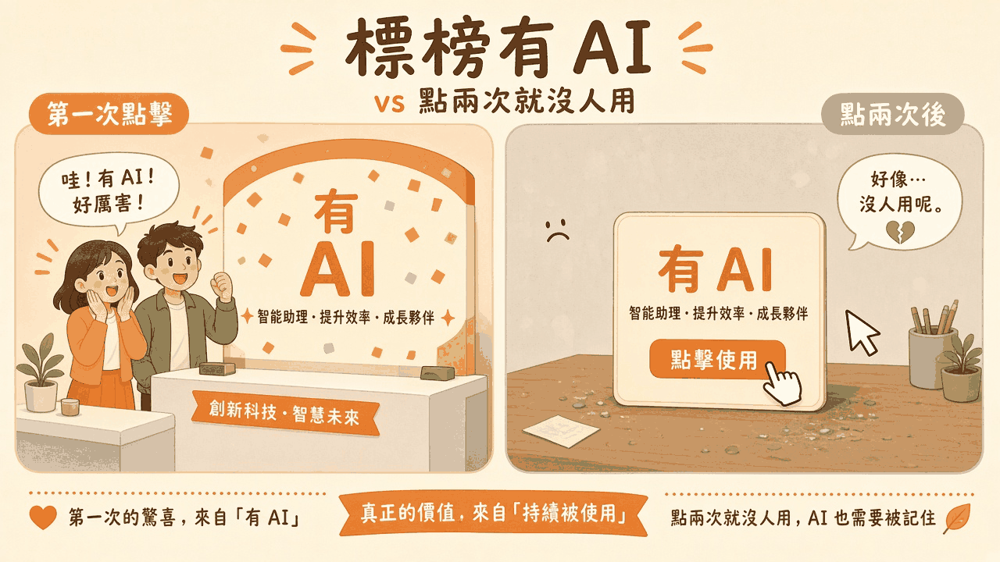
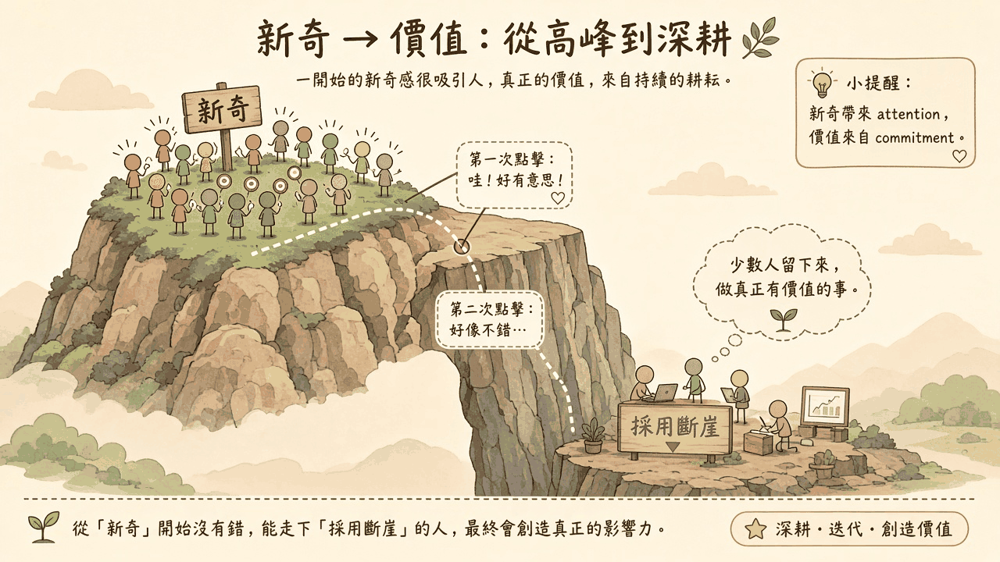
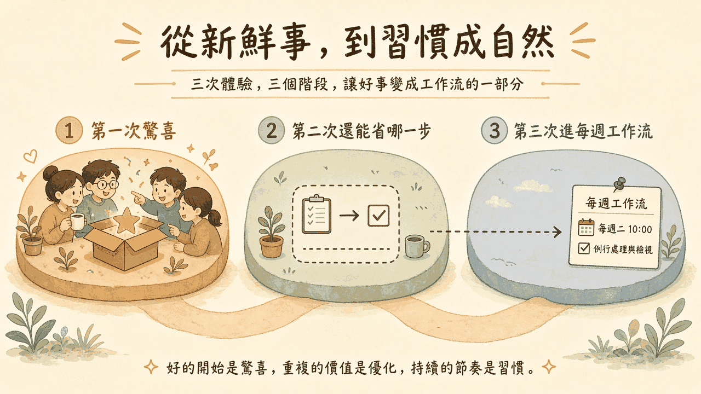

走廊口貼了一張新告示，上面寫著「有 AI」。第一次經過的人會停下來，也願意推門進去看。第二次若還是得走回自己的座位，把同一份週報按舊步驟做完，告示就開始只負責佔著牆面。標題裡的「點兩次就沒人用」，是很多團隊形容這種落差時的口語。本文把它當成示意場景，沒有查核行業用量。要看的是三次點擊各自在問什麼：第一次有沒有人進來，第二次少了哪一步，第三次有沒有寫進每週工作流。
閱讀說明：本文為編輯依常見產品上線與採用實務整理的科普短文，非整理自單一節目或供應商白皮書。「點兩次就沒人用」是常見痛點的示意場景，不是已查核的用量統計。文中不引用未查核的市場數字，也不保證採用結果。
牌子做得到的事很具體。它告訴經過的人：這裡有一個新功能，而且跟人工智慧有關。第一次點擊通常就這樣發生。有人打開，有人看完一段示範，有人在群組留一句「這個可以」。這些紀錄都是真的。它們回答的是：牌子有人看見，而且有人願意試一次。
發布當天的紀錄通常很好看。訊息有人轉發，示範有人點開，牌子旁邊的按鈕有人按。團隊容易把這一天收成「功能已經被用起來」。被用起來的是第一次。下一個工作週期還沒有發生。
第二次空掉，常常是因為人回來了，真實工作卻還在原地。以每週要交的客服週報作示意：原本的步驟是從三張表抄上週數字、寫例外說明、送給主管。頁面上新掛了「有 AI」。第一次，負責週報的同事點開示範，覺得摘要寫得順。第二次是下一個週一。示範裡的範例數字還在，三張表還是得自己抄。抄完，週報交出去，這個功能沒有參加這一次的工作。
捷徑的牌子立在走廊口。第一天大家會繞過去看。這條路若沒有少走原本那條走廊，第二天就沒有人特地再來讀牌子。牌子還在，通勤路線沒有改。

插圖：白話科技編輯繪製／AI 輔助，非新聞照片
所以第一次的驚喜可以留下來。它說明發布有沒有被注意到。第二次要另問一句：這件每週都在做的工作，少了哪一個步驟。這一句若是空的，第三次不會自己出現在週一的清單上。標題那種「點兩次就沒人用」的口語，往往就是從這句空話來的。
第一次點擊在確認牌子。第二次點擊在確認工作有沒有少一步。少的那一步寫不出來，人會回到原來的做法，功能就停在第一次的驚喜。
新奇指標很好數，因為它發生在發布當天，而且當下就有訊號。第一次打開、看完示範、留一句「哇」、在新頁面停留，都屬於這一側。它們適合回答：牌子有沒有被看見、哪一種示範最容易讓人停下來、發布訊息有沒有送到會做這件工作的人眼前。
這些紀錄升高，代表注意發生了。注意是採用的起點，值得留著。它還沒有變成工作流裡的一步。那一步要能指出三件事：哪一件重複發生的工作、哪一個原本會做的動作、這次改由功能接手或縮短。三件事對得上，第二次才有東西可以檢驗。
採用斷崖，指的是這段落差：第一次來的人很多，願意把功能留在每週做法裡的人很少，中間還沒有一座接得上的橋。斷崖的一側是新奇。另一側是例行。例行要有三樣東西同時在：一件每週會再出現的工作、一個已經在做這件工作的人、一個被寫進既有節奏的步驟。
第二次是檢驗。第一次，人還願意為了新鮮多看幾眼。第二次，形狀已經看過。形狀若沒有少做那一步，人會在同一個週一回到舊做法。舊做法一旦把這次週報做完，日曆上就沒有理由再排第三次。第三次進不了每週工作流，常常是因為第二次沒有改到任何一個既有步驟。
觀景台的人潮，是為了看一次風景。山腳下還在趕週報的人，要的是少打一次同樣的段落。人潮說明風景有人看。少打的那一段，才決定下週還會不會走上這條路。

插圖：白話科技編輯繪製／AI 輔助，非新聞照片
新奇指標回答牌子有沒有人看。每週工作流回答同一件工作少了哪一步。兩份答案都值得留。把它們收成同一個「有 AI 很受歡迎」的總分，斷崖就會變成一句說不清的「後來沒人用」。
跨過斷崖的第一件事，發生在牌子掛上去之前。先寫下一件真實工作的名字，以及每週已經在做它的人。客服週報、週會前的議題整理、每週的錯誤分類，都可以。工作要是這個團隊下週還會再做的那種。只在發布當天出現一次的示範，還停在新奇。
所有者要叫得出名字。這個人就是下個週一會打開那三張表的同事。找不到這個人，上線說明裡就寫「目前還沒有每週工作的所有者」。先補這一行，再談牌子要怎麼寫。公司要不要為這個功能另立年度目標，不是這一步的前提。
第二件事是把「省哪一步」寫成一句話，放在功能旁邊，也放進上線說明。句子要短到負責人看得懂。例如：上週數字由這裡帶入，人只改例外說明。被省下的動作要是原本真的會做的動作。「看起來更聰明」「摘要更完整」，都還沒有指出少了哪一步。
第二次點擊的成功，就是這句話發生了：同一個人回到這件工作，而且那一步是在這個功能裡完成的。再看一次示範、再點一次牌子，都還是第一次的形狀。成功定義寫在事件旁邊，之後才知道第二次有沒有跨過斷崖。
第三件事是時間與位置。第三次要出現在本來就有的清單上。週一交週報的清單若本來就有「抄上週數字」，現在多一行「由這個功能帶入，人改例外」。看這一行有沒有發生的人，也放在本來就有的檢視裡：週會、既有的週報回顧，或負責人自己的週一檢查。這件事沿用已經在走的節奏，不必另開一場只談人工智慧的會。
這樣斷崖就有了位置。它變成三件事裡哪一件還沒寫下來：工作與所有者、第二次要省的步驟、例行裡的第三次。缺的那一件還看得到。
公車時刻表上的站，才是每週會到的地方。新站牌若沒有寫進時刻表，第三次不會自己出現在路線上。站牌可以很醒目。醒目負責第一次有人回頭。

插圖：白話科技編輯繪製／AI 輔助，非新聞照片
以下是編輯根據本文延伸的實務建議，不是講者原話，也不是已驗證的研究結論。
為第二次點擊寫下成功定義。成功是：同一個人回到這件具名的每週工作，並在功能裡完成原本要省下的那一步。再點一次按鈕、再看一次示範，都還停在新奇。定義寫在事件旁邊，之後才知道第二次有沒有發生。
把功能掛進工作已經開始的地方。入口放在那件工作原本的頁面或清單，跟既有步驟排在一起，讓人從每週工作進入這一步。
分開觀測第一次打開與之後的回訪。第一次打開歸在新奇。七天內回到同一件工作、下一次例行節奏裡那一步被完成，各自留欄。只看第一次打開的看板，看不見斷崖。
選一個已經上線、頁面上有「有 AI」的功能。寫下一句第二次成功：哪一件每週工作、省下哪一步、完成時要留下哪個事件。再列出三個事件名稱：第一次打開、七天內回到同一件工作、下一次例行節奏裡這一步被完成。驗收方式：同事能指著同一份清單，說出哪一個事件只代表新奇、哪一個事件代表那一步被省下來。這是這週的事件清單試驗，不能推成採用率。
以下是編輯根據本文延伸的實務建議，不是講者原話，也不是已驗證的研究結論。
上線前指定真實工作的所有者。所有者是每週已經在做這件工作的人，姓名寫在上線說明裡。找不到人，就標成「目前還沒有每週工作的所有者」。這一步先於牌子文案。
採用證據看第二次有沒有少做那一步。「有 AI」標籤與第一次點擊，說明牌子被看見。它們不代替採用證據。採用證據是：具名的工作、被省下的步驟、以及這件事有沒有在下一次例行裡發生。
在既有例行節奏裡指定誰看第二次與第三次。這個人在已經存在的週會或檢視裡看這兩次紀錄，並說出缺的是工作、步驟，還是節奏。不必為了這件事新開一場會，也不必假定團隊能決定公司級的工具採購。
為一個準備上線或已經上線的功能寫四行：真實工作名稱、所有者姓名或「目前還沒有」、第二次要省的那一步、誰在哪一個既有例行裡看第二次與第三次。驗收方式：四行都在上線說明裡；所有者要麼是已經在做這件工作的具名同事，要麼明確標成尚未找到；檢視的人與場合是既有節奏。這四行不補未經查核的採用比例或節省時數。
新奇可以是真的。斷崖出現時，先看第二次省了哪一步、第三次有沒有寫進例行節奏。
本文為編輯依常見產品上線與採用實務整理的科普短文，非整理自單一節目或供應商白皮書，也不冒充研究結論。「點兩次就沒人用」是常見痛點的示意場景，不是已查核的用量統計。文中不引用未查核的市場數字或採用率。延伸閱讀連回本站姊妹篇，供對照試用與付費、計價單位，以及怎麼看見工作有沒有被做完。